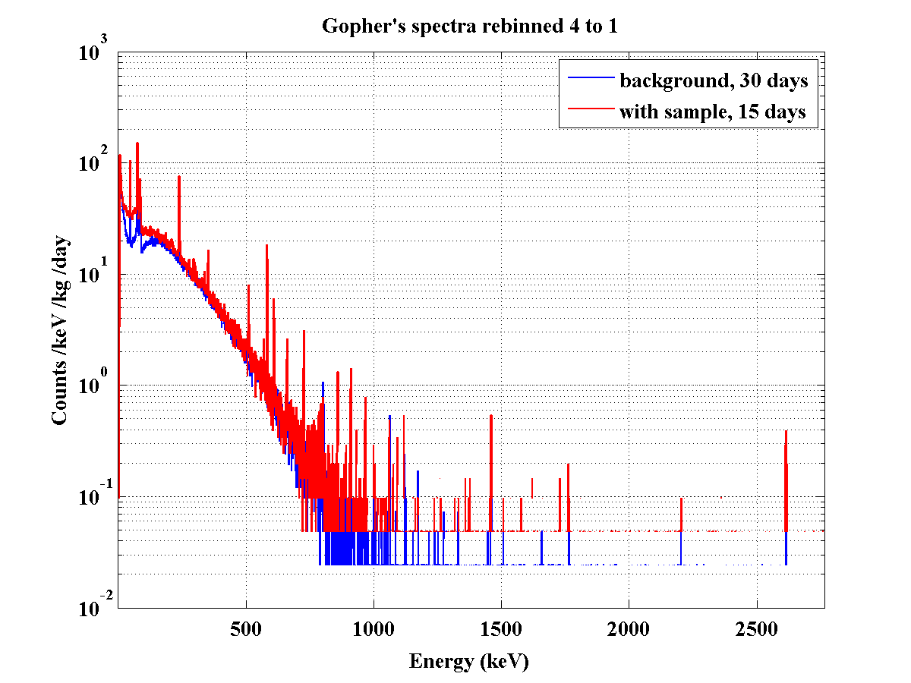
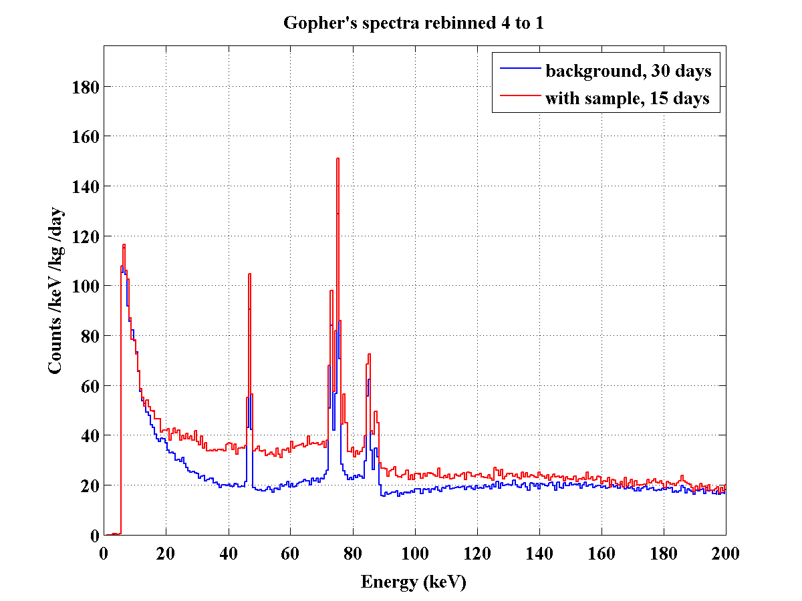
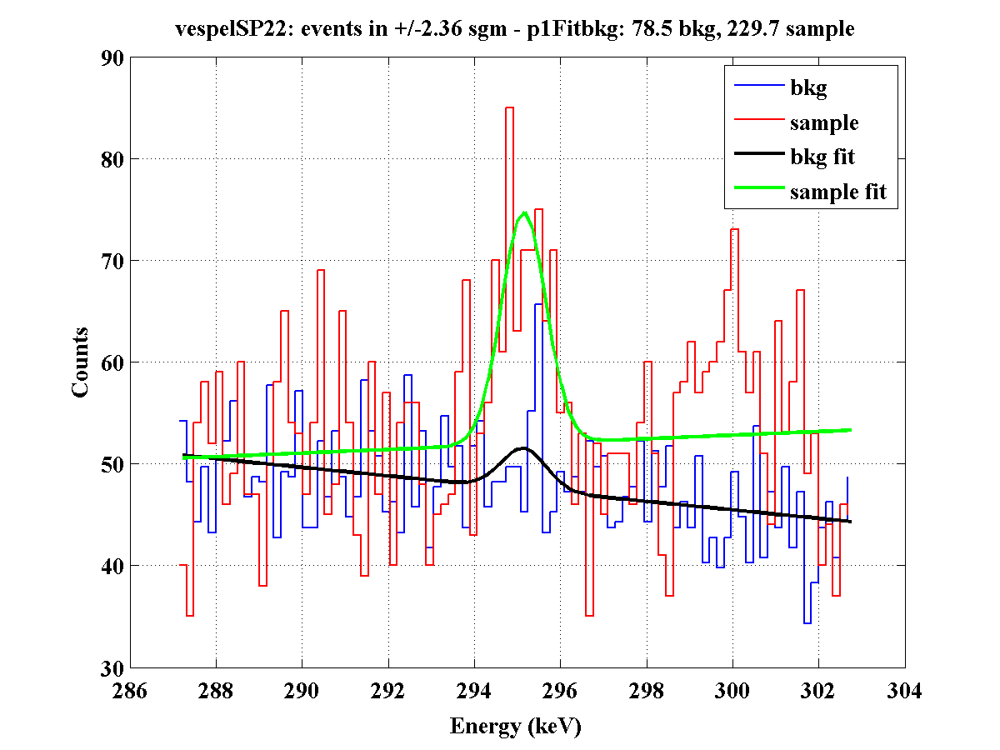
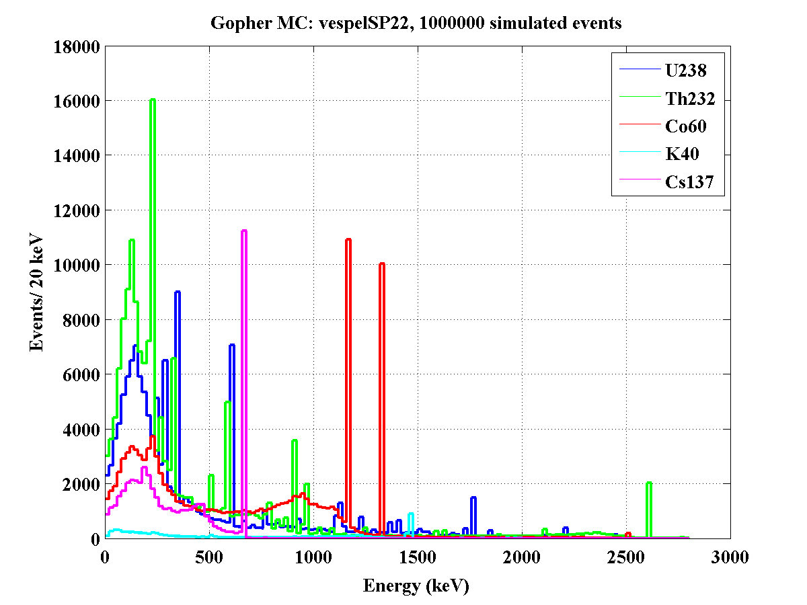
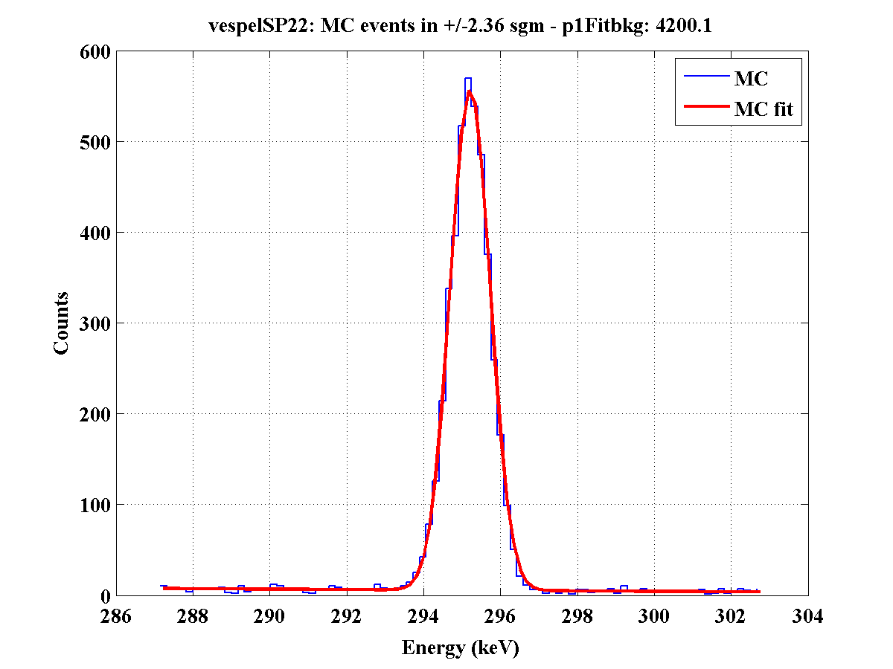
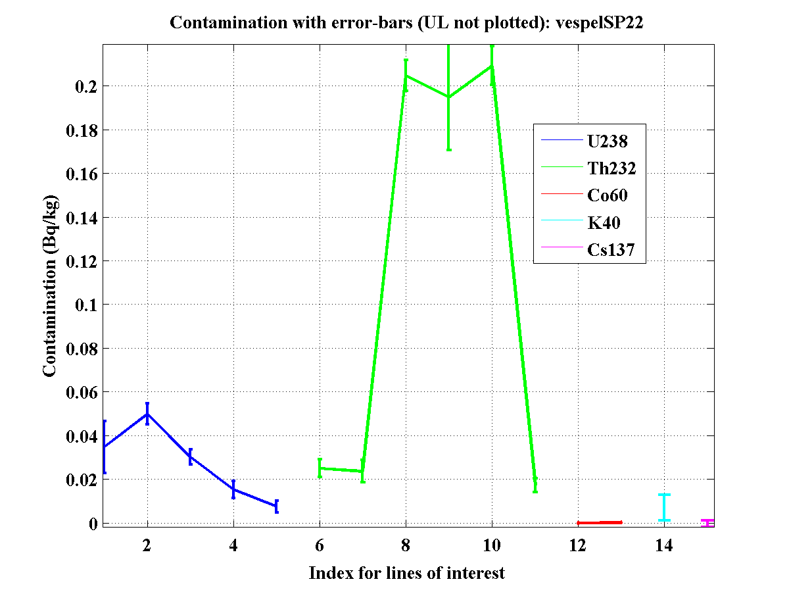

| Fig. 1: Background spectrum and spectrum with sample inserted for the whole energy range. |
|  |
| Plot range (keV): |
0 - 200 |
200 - 400 |
400 - 600 |
600 - 800 |
800 - 1000 |
1000 - 1200 |
1200 - 1400 |
1400 - 1600 |
1600 - 1800 |
1800 - 2000 |
2000 - 2200 |
2200 - 2400 |
2400 - 2600 |
2600 - end |
| Fig.
2: Background spectrum and spectrum with sample inserted for
selected ranges of interest. |
|  |
| Line of interest (keV): |
295 |
351 |
609 |
1120 |
1764 |
911 |
969 |
238 |
511 |
583 |
2614 |
1461 |
1173 |
1332 |
661 |
| Isotope: |
Pb-214 | Bi-214 | Ac-228 | Pb-212 |
Tl-208 | K-40 |
Co-60 | Cs-137 |
|||||||
| Chain: |
U-238 chain |
Th-232 chain |
|||||||||||||
| Fig.
3: Fits to background and sample spectra for the line of
interest. |
|  |
| Fig. 4: MC-simulated spectra with sample inserted for the contamination of interest. |
|  |
| Line of interest (keV): |
295 |
351 |
609 |
1120 |
1764 |
911 |
969 |
238 |
511 |
583 |
2614 |
1461 |
1173 |
1332 |
661 |
| Isotope: |
Pb-214 | Bi-214 | Ac-228 | Pb-212 |
Tl-208 | K-40 |
Co-60 | Cs-137 |
|||||||
| Chain: |
U-238 chain |
Th-232 chain |
|||||||||||||
| Fig.
5: Fits to MC-simulated sample spectrum for the line of
interest. |
|  |
| Fig. 6: Calculated contamination for the sample; visual representation of the corresponding columns from Table 3. |
|  |
{kind=link}
{kind=link}
{kind=link}